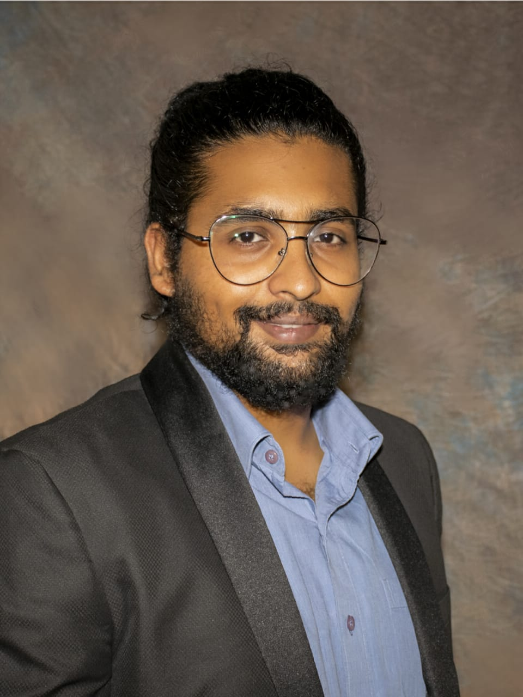

Birds-eye View

Closer look

We are Group 4 of Distributed Information System Course of Fall 2019 (ISM 6225) at University of South Florida. We are pursuing MS in Business Analytics & Information Systems from Muma College of Business. This assignment is intended to help us practice html, css and optionally, JavaScript to get good design results. The project is available in the Github Repository. Please find our contact details below
| Team Member | Contribution |
|---|---|
|

Chandan Malamardi chandanm@mail.usf.edu |
Chandan is the main programmer of this html page. With his past experience as a webpage developer, he was able to provide useful insights of how to go about programming of HTML. He helped the team whenever they were stuck with errors and roadblocks in programming. His contribution was the About Project page and Unemployment page. |
|
Priyanka Sariya psariya@mail.usf.edu |
The main idea of this project was designed by Priyanka. She did the initial research what should be the theme of this webpage and wher should we extract the data, and went ahead and share her thoughts and design with the team. The idea was immediately picked up by the team. Her contribution was the the Home page and Population page of this website. |
|
Rao Randhir Singh raorandhir@mail.usf.edu |
Randhir was the person who kept the team going. He was the one who pushed the team to do things on time and held meetings to ensure that the team was progressing in the right direction. His contribution was in making the Home Page and the unemployment page. |
Below is the logical data model of our data model.
Birds-eye View
Closer look